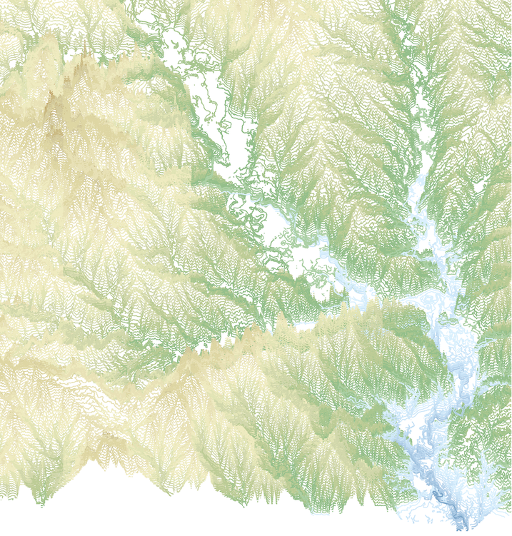
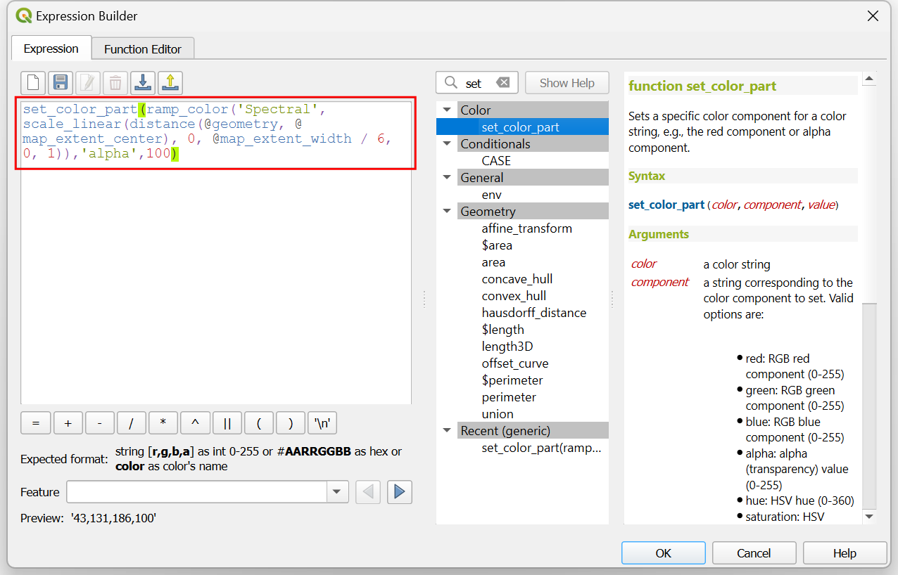
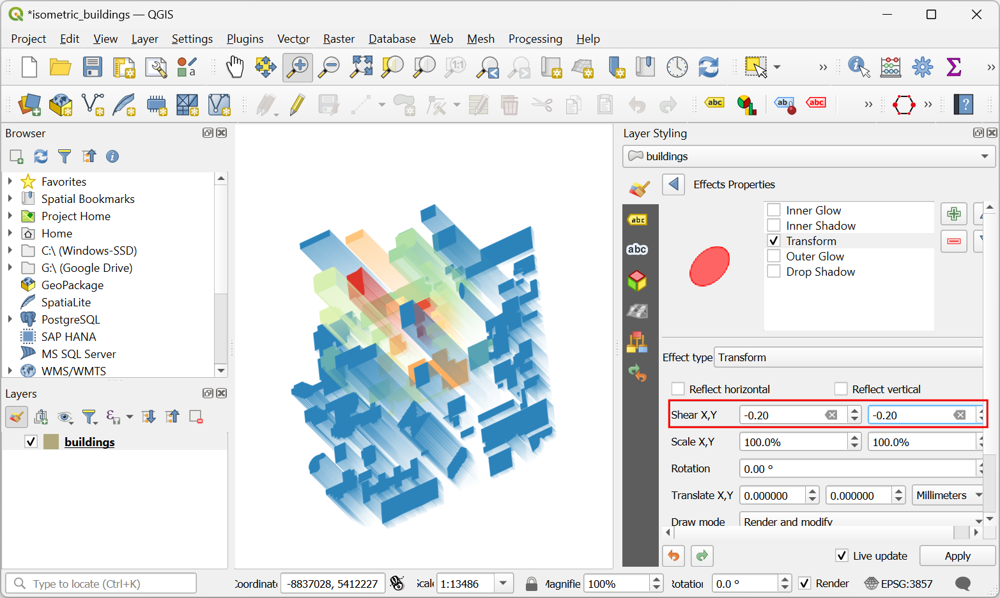

Creación de edificios isométricos (QGIS3)¶
Contribución de: Steven Kim
OpenStreetMap (OSM) is a crowd-sourced global dataset of roads, boundaries, buildings and more. It has a growing collection of building footprints across the world with many of them also having height information. While the accuracy of building height data is notoriously difficult to validate for analysis, we can use QGIS expressions to create a fun artistic isometric rendering from this data.
Visión general de la tarea¶
Descargaremos de OSM los datos de las huellas de los edificios del centro de Toronto y crearemos un mapa isométrico de las alturas de los edificios.
Obtener los datos¶
Vamos a descargar datos de OpenStreetMap(OSM) utilizando el complemento QuickOSM. Ver Buscar y Descargar Datos de OpenStreetMap (QGIS3) para una introducción al complemento QuickOSM. Una vez que haya instalado el complemento, puede seguir las siguientes instrucciones para obtener los datos de su región.
Nota
Este tutorial está específicamente diseñado para trabajar con los datos OSM extraídos del complemento QuickOSM. La expresión de altura no funciona con archivos OSM planet o extractos de datos con other_tags. En esos casos necesitas primero extraer los niveles y alturas de los edificios antes de usarlos.
Abra QGIS. Primero cargaremos un mapa base. Desde el panel Navegador, desplázate hacia abajo y localiza la capa de baldosas . Arrástrela y suéltela en el lienzo principal. Haz zoom hasta la región que te interese. Asegúrese de que la región está completamente cubierta por la extensión del mapa.

Inicie el complemento QuickOSM desde .

In the Quick query tab, enter
buildingas the Key. Change the In to Canvas Extent. This will download all buildings in the current canvas extent. Expand the Advanced section, then unclick Points, Lines and Multilinestrings. This should leave Nodes, Ways, Relations and Multipolygons selected. Select Run query. Close the window once the map is loaded.

All the available building footprints in the canvas extent will be loaded in a new layer
building. You can continue with the data, or select a subset of the buildings. For this tutorial, we will select all buildings in your region of interest. Click the Select Features by Area or Single Click button on the Selection Toolbar. You can hold the left mouse button and draw a rectangle to select the required buildings. You can also hold the Shift key and click on the polygons to select them.

Una vez seleccionados todos los edificios necesarios, haga clic con el botón derecho del ratón en la capa
buildingy seleccione .
In the Save Vector Layer As… dialog, click the … button next to File name and browse to a folder on your computer. Enter the File name as
osm_buildings.gpkgand Layer name asbuildings. The downloaded buildings are in the CRS EPSG:4326 WGS84. This is a Geographic CRS with units in degrees. We can choose a Projected CRS which will allow us to use linear units of measurement such as meters. Click the dropdown menu for Select CRS and chooseProject CRS: EPSG:3857 - WGS84 / Pseudo-Mercator. Click OK.

The selected buildings will be reprojected and saved to a new GeoPackage file.

For convenience, you may directly download a copy of the downtown Toronto buildings from below:
Fuente de datos [OPENSTREETMAP]
Procedimiento¶
Localice el archivo
osm_buildings.gpkgen el navegador QGIS y expándalo. Selecciona la capabuildingsy arrástrala al lienzo.
Haga clic en Abrir panel de estilos de capa y cambie de Símbolo único a 2,5 D.

Haga clic en el botón ε situado junto a Altura.

En el Constructor de expresiones, introduzca la siguiente expresión. Esta expresión aplica un multiplicador al primer campo no nulo de
building:levelsyheight. Si ambos son nulos, se utilizará una altura predeterminada de 20 metros. Tenga en cuenta que se trata de alturas exageradas para visualizarlas a escalas mayores.
coalesce("building:levels"*10, "height"*2, 20)
Cambia la Ángulo a
135grados.
Un-check the Shade walls based on aspect and Shadow. We will be applying our own colors. Click on the dropdown for selecting the renderer.

Cambiar de 2.5 D a Símbolo único.

En la ventana Símbolo, observe que hay dos Generadores de Geometría, cada uno con un tipo de capa Relleno Simple. La primera Relleno Simple es la cara superior de cada bloque, mientras que la segunda Relleno Simple es la cara lateral. Haga clic en la primera Relleno simple para cambiar el color de la cara superior. Haga clic en el botón Los datos definen la omisión de Color de relleno y seleccione Editar… en el menú.

Aparecerá el cuadro de diálogo Constructor de expresiones para Color de relleno. Introduzca la siguiente expresión. Esta expresión aplica la rampa de color Espectral a los datos en función de su distancia al centro del mapa.
ramp_color('Spectral', scale_linear( distance(@geometry,@map_extent_center), 0,@map_extent_width/6, 0,1 ) )
Haga clic en el botón Los datos definen la omisión para el Color de relleno y seleccione Copiar… en el menú.

Haga clic en el botón Los datos definen si se anula de Color de trazo y seleccione Pegar… en el menú para aplicar la misma expresión.

Ahora haga clic en la segunda Relleno Simple para cambiar los lados. Puede que tenga que desplazarse hacia abajo para hacerlo. Haga clic en el menú desplegable de Tipo de capa de símbolos.

Change the Symbol Layer Type from Simple Fill to Gradient Fill. The two color selectors beside the Two color represent the top and bottom colors of the gradient. Click on Data define override button for the top color.

Select Edit and enter the following expression. This is the same expression that we used for the roof color but adjusts the transparency of the color using the
set_color_part()function.set_color_part( ramp_color('Spectral', scale_linear( distance(@geometry,@map_extent_center), 0,@map_extent_width/6, 0,1 ) ), 'alpha',100)Click on the small black triangle of the bottom color selector and check Transparent box.

Antes de salir del Panel de Estilizado de Capas, vamos a transformar la capa para completar el aspecto isométrico. Despliegue la sección Renderizado de capas y marque Dibujar efectos. Haga clic en la estrella Personalizar efectos de la derecha.

Haga clic en el menú desplegable situado junto a Tipo de efecto.

Cambie el Tipo de efecto de Fuente a Transformación. Para Corte X,Y, introduzca -0.2 y -0.2 respectivamente.
Introduzca
45para Rotación. Salga y cierre Panel de estilo de capa.
Debería ver una colorida representación de los polígonos del edificio en vista isométrica. Siéntete libre de experimentar con las expresiones de altura, ángulo, colores de relleno, etc.

If you want to give feedback or share your experience with this tutorial, please comment below. (requires GitHub account)